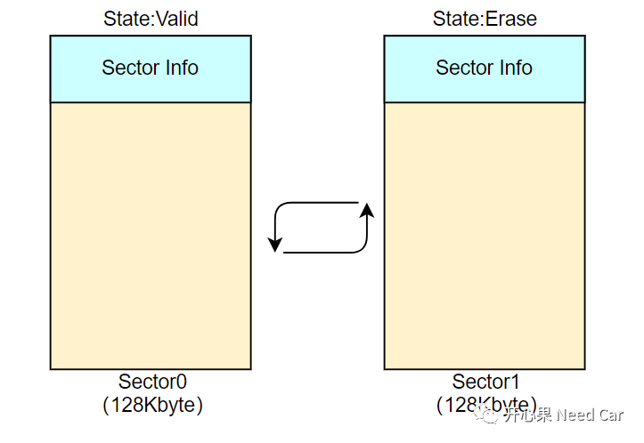
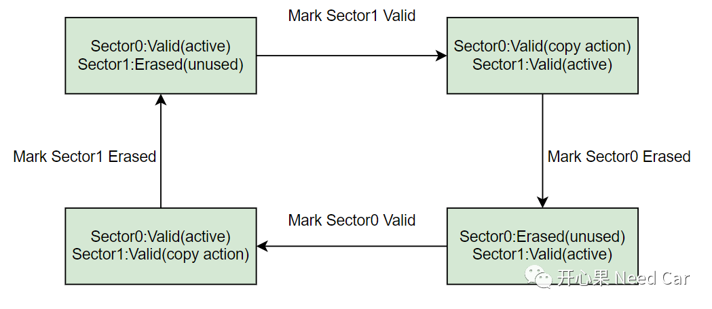
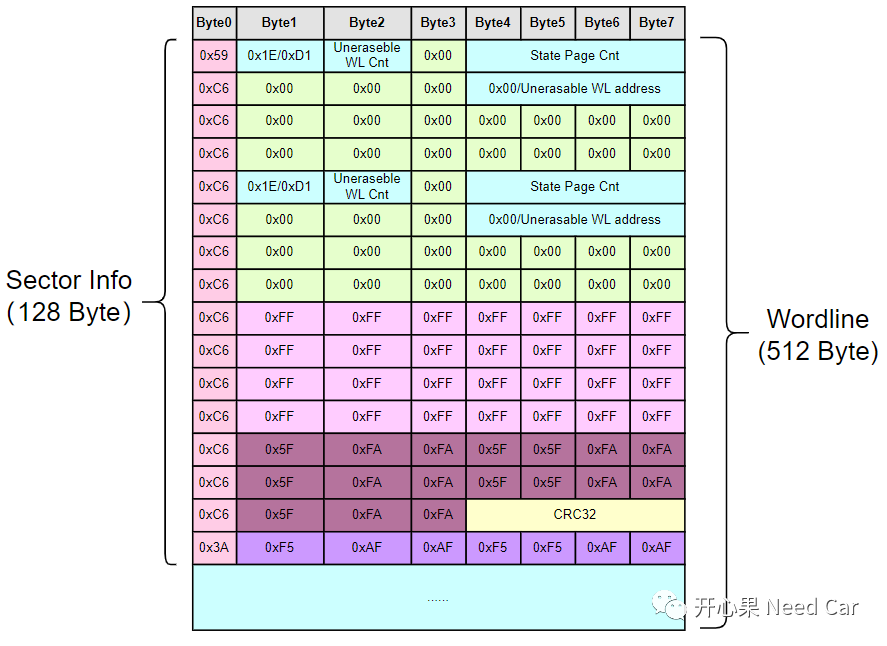
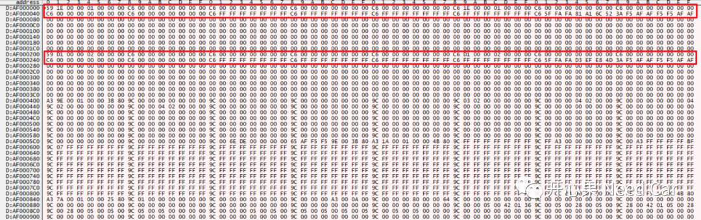
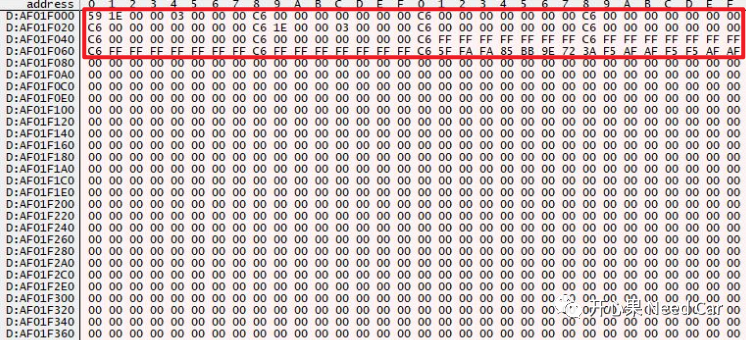

开心果 Need Car · 2022-12-07T06:37:00+08:00 · 微信原文
在之前的文章中，聊过NVM（NVRAM Manager）问题，可以参考前文NVM基础概念。NVM的存储中，使用DFlash模拟EEPROM时，"切页"是绕不过的一个话题。切页的原理之前讨论过，但是切页的一些细节值得讨论。本文解读一下切页时的Sector信息。
1、Sector0与Sector1之间的状态切换

提示：这里的"页"，使用了Sector表示，也有用文章用Page表示，大家注意理解。
在进一步的细化"切页"过程，如下所示：

使用Sector0开始存储数据，让Sector0处于激活（active）状态，同时将其设置成有效（Valid）状态，设置Sector1为擦除状态，当前不可用（unused）;
当Sector0空间存储满以后，先将Sector1标记有Valid，之后将Sector0中已经存储的有效数据Copy到Sector1中，使用Sector1。之后擦除Sector0，同时将其标记为Erased的状态；
当Sector1存储满以后，先将Sector0设置为Valid状态，将Sector1中的有效数据Copy到Sector0，之后擦除Sector1，同时将其设置为Erased状态。
如上的切页过程中，Sector0/1的状态不断的切换，这些状态信息从哪里读取？又如何定义其格式呢？如下是一个Sector的Header Info格式：

本文讨论的Sector Header Info中，使用Wordline（512 Byte）描述一个Pattern（128 Byte）。这里的Pattern每家实现可能不同，即使同一家，不同的芯片型号使用的Pattern也可能不同。Pattern的样式属于软件行为，即：如何定义这个Pattern，由实现者设计。
具体解释：0x59表征一个当前Sector的起始行，0xC6表征连续行，0x3A表征描述信息的尾行。其中0x1E标识当前的Sector已擦除，0xD1标识当前的Sector正在使用，是有效的（Valid）。eg：Sector0处于Active状态时，会有两个Wordline的描述，一个0x1E（Erased），一个0xD1(Vaild)。
（一）激活(active)的Sector示例如下所示：

对于unused的Sector，只有一个Wordline信息，即：只有0x1E（Erased）的状态，没有Vaild的Worldline信息。
（二）非激活的Sector示例如下所示：

往期精彩回顾